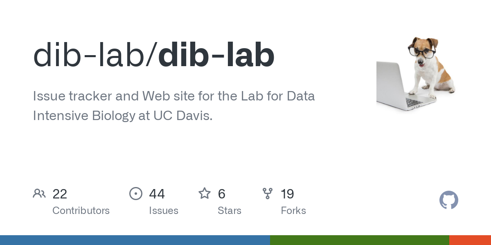

My Successes and Failures in Graduate School
How to Think like a Resilient Scientist
![]()
Wednesday, the 26th of June, 2024
What defines success and failure in academia?
- The making of a scientist
- Navigating higher education
- What is a PhD like
- Research
What makes a scientist?
Hispanic, Black, and American Indian or Alaska Native students are underrepresented among S&E graduate students
{kind=link}
The number of women enrolled in S&E graduate programs increased from 2017 to 2021
Individuals with at least one disability earned 11% of S&E doctorate degrees.
{kind=link}
The professoriate is, and has remained, accessible disproportionately to the socioeconomically privileged
Socioeconomic roots of academic faculty
- grew up in neighborhoods with median household incomes 24% higher than the national average.
- 25 times more likely to have a parent with a Ph.D.
- A trend of more than 50 years
Amount of support parents provided for academic careers on a scale of 1 (None at all) to 5 (A lot), stratified by faculty members’ parents’ highest education levels.
Anyone from anywhere has scientific potential
Who is a scientist?
- Anyone who asks a question, reads the literature, gathers results, and writes their thoughts down
Where do they come from?
- Everywhere.
What do they look like?
- Anyone.
Navigating higher education
I am a scientist.
I was not raised to be one, but became one with the help of others.
Anyone can become a scientist with curiosity, persistance, and luck!
Navigating higher education – CSP
- Switch major from engineering to sciences
- Pursued research in each topic of interest
- Continued blue collar work while starting a family
PREP is pivotal for individuals not prepared for graduate school
Navigating higher education – PREP@UCD
- I decided much too late to begin graduate school applications
- My scientific writing was very weak
- Post-Bacc programs exist to help the disadvantaged enter graduate school
Graduate school programs have a relatively simple structure
Navigating higher education – BMCDB
- Umbrella program or Standalone program
- Courses and lab choices
- rotations or predetermined lab assignment
- time management
- healthy workplace boundary
- rotations or predetermined lab assignment
- establish foundation in domain
- literature review
- project design
- QE
- Dissertation work
- literature review
- 2-3 peer reviewed articles
What is a PhD like?
It can be the best/worst decision of your career.
Failures and Success are all transient
Change is the only inevitable constant
One day, the Farmer’s only horse ran away
- “What bad luck!” said their Neighbors
- “Maybe” replied the Farmer
Later, the horse returned with three wild horses
- “What good luck!” said their Neighbors
- “Maybe” replied the Farmer
While training the horse, the son of the farmer was badly injured
- “What bad luck!” said their Neighbors
- “Maybe” replied the Farmer
While recovering, a conscripting army comes to town but does not take the son
- “What good luck!” said their Neighbors
- “Maybe” replied the Farmer
Define your own value by yourself
What is a PhD like?
Value yourself!!!
- Define your success through achievable goals and acknowledge them!
- Track your completed tasks over a year in a single place
- review your successes at the end of the year with pride
- Failures teach us lessons
- Learn the lesson; Forget the failure
- Do not fear sunken costs
- Do not justifying further investments in something that is bad for you!
A partially examine career is not worth working
What is a PhD like?
Consider this:
- You are a student first!
- Learn hard skills, but also soft skills
- You are surrounding yourself with intelligent, yet overworked people
- We are all capable of mistakes
- Define your expectations and the expectations of others
Finding a your lab is hard
What is a PhD like?
Graduate school experiences are controlled by three factors
Look for lab with trust, growth options, flexibility, and respect
What is a PhD like?
| Lab Aspect | Details | Without |
|---|---|---|
| Trust |
|
|
| Growth Opportunities |
|
|
| Flexibility |
|
|
| Value |
|
|
Funding is hard to get, but you only need a source for yourself
What is a PhD like?
Funding options:
- lab, TA, fellowship, or secondary source
- $33,500-47,000 annual pay
- Additional awards
Money is not the source of happiness, but it sure does help
What is a PhD like?
Bioinformatics outlook
- Job growth is 23% by 2032
- Microbiologist is 7%
- $120,000 average annual earnings
- Master’s - $83,000
- Microbiologist - $93,000
- Transferable skills!
A foundation of knowledge is key to success in knowledge work
What is a resilient scientist?
- What a scientist is. A curious mind.
- Everyone could be a scientist. They simply must ask questions, unrelentingly pursue answers, and document their findings!
- Navigate higher education with the help of others!
- No person is an island and no graduate student should be left alone.
- By understanding that a PhD is not easy, but it is very rewarding!!!
- Success can be found with persistence, acceptance, project management (i.e. soft skills), and funding
My research
Beautiful tables and figures in a well-crafted report is invaluable
Research overview
{kind=link}
Databases are powerful tools for any data-dependent field
Outreach is vital for career and self-care

Finding the most readable article can make reading easier
library(dplyr) # Data manipulation
library(gt) #Presentation-ready tables
library(bibliometrix) #Load the site search results
library(quanteda.textstats) # analysis tool for readability
library(tidyverse) #Organize the data
wos <- convert2df(file = "wos-plaintext-savedrecs.txt", dbsource="wos",format="plaintext")
scop <- convert2df(file = "scopus-bib-crc.bib", dbsource = "scopus", format = "bibtex")
pubmed <- convert2df(file = "pubmed-plaintext-colorectal-set.txt", dbsource = "pubmed", format = "plaintext")
fulldb <- mergeDbSources(wos, scop, pubmed, remove.duplicated = TRUE) %>%
drop_na(TI, DI, AB) #remove NA values
#create an abstract only character vector
fdb.ab <- fulldb$AB %>%
textstat_readability(measure = c("Dale.Chall.old", #min
"Flesch.Kincaid", #min
"FOG", #min
"SMOG", #min
"Flesch")) %>% #max
cbind(fulldb$TI, fulldb$DI) %>% #add titles
rename_at(7, ~'Titles') %>%
rename_at(8, ~'DOI')
looong <- tidyr::pivot_longer(fdb.ab,
cols = c(Dale.Chall.old,
FOG,
SMOG,
Flesch.Kincaid,
Flesch)
) %>%
as_tibble()
looong %>% #Use the longer dataframe
mutate(Titles = sprintf('<a href = "https://www.doi.org/%s">%s</a>',
DOI,
Titles),
Titles = lapply(Titles, gt::html)) %>% #Hyperlink each Title with DOI link
arrange(factor(name, levels = c("Flesch",
"Dale.Chall.old",
"FOG",
"SMOG",
"Flesch.Kincaid"
)
), value) %>%
group_by(name) %>% #while we could use
#`group_by(name) %>% arrange(name, value)`
#using `arrange(factor())` allows us to
#set the order of the groups!
filter((name %in% c("Dale.Chall.old", "FOG", "SMOG", "Flesch.Kincaid") &
row_number() %in% 1:20 |
(name %in% "Flesch" & row_number() %in% (n()-19):n()))) %>%
#above we "filtered" the first 10 and bottom 10 rows of corresponding stats
#remember that we have "arranged" each group by ascending values
#arrange(value = ifelse(name %in% "Flesch", desc(value), value)) #%>%
mutate(arrange_value = ifelse(name == "Flesch", -value, value)) %>%
arrange(arrange_value) %>%
select(-arrange_value) %>%
#if the name column contains Flesch
#"arrange" by decreasing values
gt() %>%
cols_hide(columns = c(document, DOI)) %>%
tab_stubhead(label = "Titles") %>%
fmt_number(columns = value, decimals = 2) %>%
tab_header(
title = md("The *most* readable documents"),
subtitle = "Five readability statistics; Flesch, the old Dale-Chall, FOG, SMOG, and Flesch-Kincaid"
) %>%
tab_style(
locations = cells_title(groups = "title"),
style = list(
cell_text(weight = "bold",
size = 24)
)
)%>%
tab_options(
column_labels.border.top.width = px(3),
column_labels.border.top.color = "transparent",
table.border.top.color = "transparent",
table.border.bottom.color = "transparent",
data_row.padding = px(3),
source_notes.font.size = 12,
row_group.background.color = "grey") %>%
tab_style(
locations = cells_column_labels(columns = everything()),
style = list(
cell_borders(sides = "bottom",
weight = px(3)),
cell_text(weight = "bold")
)
) %>%
tab_style(
style = list(
cell_text(
align = "center",
weight = "bold"
)
),
locations = list(
cells_row_groups(
groups = c("Dale.Chall.old",
"FOG",
"SMOG",
"Flesch.Kincaid",
"Flesch")
)
)
) %>%
cols_align(
align = "left",
columns = Titles
) %>%
tab_style(
style = cell_text(size = px(12)),
locations = cells_body(
columns = Titles
)
) %>%
tab_source_note(
source_note = md("Source: PubMed, SCOPUS, WoS; Colorectal Metagenome and Metabolome Search")
) %>%
tab_source_note(
source_note = md(
'Query: TITLE-ABS-KEY ( "colorectal cancer*" OR "colorectal neoplas*" OR "adenomatous polyposis coli" OR "colon* neoplas*" OR "rectal neoplas*" OR "hereditary nonpolypo*" AND "metagenom*" AND "metabol*" )'
)
) %>%
tab_footnote(
footnote = md("The **lowest** estimated grade level."),
locations = cells_body(
columns = value,
rows = value == min(value)
)
) %>%
opt_footnote_marks(marks = c("*", "+"))Acknowledgements
